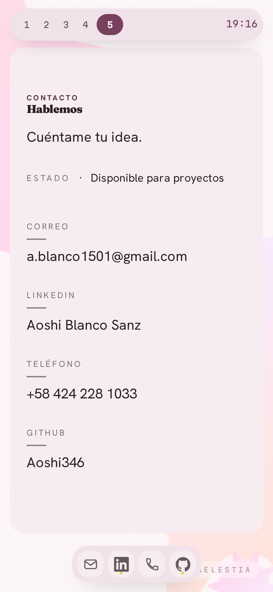

El de la derecha es una página de verdad dentro de un iframe de 390 px, no un div estrecho: dentro del marco el viewport es 390, así que las media queries y los vw se comportan como en el teléfono. Las medidas de abajo se leen de dentro de ese marco.

Captura del build en un viewport de 390×844. Cuatro barras iguales, el titular más pequeño que su lead, y mucho aire vertical sin usar.
Vivo: el color y el reloj siguen la hora de arriba. El troquel deja de sangrar y pasa a ser un sello entero, con la figura de ocho lóbulos en vez de la de doce.
tel: y rel
| Elemento | Escritorio | 390 |
|---|---|---|
| Titular | --t-10 · 159,66 | --t-8 · 89,85 |
| Valor del acto | --t-4 · 28,43 | --t-3 · 21,33 |
| Valor del destino | --t-2 · 16 | --t-2 · 16 |
| Los cuatro canales | 2 actos + 2 destinos al canto | 2 actos en fila entera + 2 destinos a mitades |
| Troquel | 460 px, sangrando | 196 px, sello entero |
| Figura del sello | galleta · 12 lóbulos | sol · 8 lóbulos |
| Profundidad del lóbulo | 24,9 px | 20,6 px |
B1, B2 y B3 dejaron el móvil fuera de alcance a propósito, y está escrito en sus specs. B5 no puede. Esta es la escena del contacto: tel: abre el marcador y mailto: abre el correo — son gestos de teléfono. Una escena de contacto que solo funciona en escritorio contradice lo único que la escena existe para hacer.
Medido con viewport de verdad (390×844, táctil), no metiendo la página en una caja de 390: las media queries y las unidades vw/dvh leen el viewport, no la caja del padre. Y el extremo del texto, con Range.
| Medida | 390×844 | 1440×900 | Qué dice |
|---|---|---|---|
| Ventana | 362 × 692 | 1412 × 748 | El carril de la fase A ya se adapta. |
| ¿Desplaza por dentro? | no · 692 = 692 | no · 748 = 748 | Cumple la ley de la fase A en los dos. |
| Ancho muerto al canto derecho | 56 px · 15 % | 1106 px · 78 % | A 390 la ocupación es buena. El defecto grande del diagnóstico es de escritorio. |
| Área accionable por canal | 362 × 98 | 1412 × 98 | Lo mejor que tiene el diseño de hoy, y es en móvil donde se justifica. |
| Titular «Hablemos» | 16 px | 16 px | Idénticos. Esta escena no tiene tipografía adaptable: ni un solo tamaño cambia entre 390 y 1440. La jerarquía invertida del diagnóstico es exactamente la misma en el teléfono. |
| Lead «Cuéntame tu idea.» | 20 px | 20 px | |
| Valor del canal | 20 px | 20 px | |
| Rótulo | 12 px | 12 px |
--t-10 a --t-8 de golpe, en un @media. No hay ningún clamp() ni ningún vw en la escala — la regla dura del repo, y la que permite que el arnés exija un valor exacto en vez de un rango.--t-9 deja «Cuéntame» en 398 px sobre una medida útil de 322: se sale. --t-8 la deja en 298. No es un tamaño elegido a ojo, es el paso más grande que cabe.div de 390. Un div estrecho no cambia el viewport: las media queries no disparan y los vw siguen midiendo la ventana entera. Una maqueta así enseña algo que no existe.clamp() entre los dos tamaños. Devuelve cualquier real entre sus topes y acierta justo en 390 y 1440, que es donde se mira. Ya recurre cinco veces en el repo.contacto.ts exige.